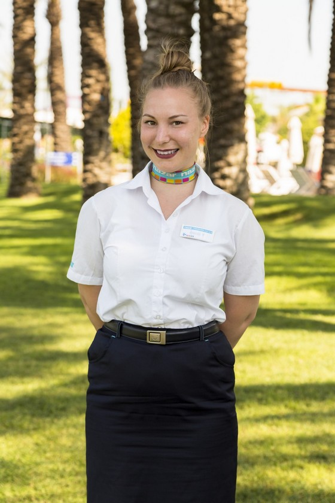

Konduktööri
Olen työskennellyt VR lähiliikenteen konduktöörinä vuodesta 2021 saakka. Työ on vaativaa
asiakaspalvelutyötä.
Lippujen tarkastamisen lisäksi konduktööri vastaa junan turvallisuudesta eli puuttuu
järjestyshäiriöihin.
Tulipalon sattuessa vastaa koko junan evakuoinnista.
Tavallinen työpäivä ei kuitenkaan sisällä jatkuvia jännittäviä tilanteita.
Perus työtehtävät liittyvät matkustajien opastamiseen junasta toiseen ja matkalipputyyppien neuvontaan.
Matkaopas
Olen suorittanut Matkailualan perustutkinnon Helmi Liiketalousopistosta. Erikoistuin opinnoissani
opasapalveluihin.
Matkaoppaan siipiä pääsin kokeilemaan Nazarin matkaoppaana Turkissa. Elämäni parhaimpia kokemuksia.
Matkaoppaan jokainen päivä on erilainen.
Tehtäviini kuului matkustajien vastaanottaminen lentoasemalla vuorokauden ajasta riippumatta. Ohjasin
matkustajat busseihin
ja toivotin heidät tervetulleeksi Turkkiin mikrofoniin puhuen. Lisäksi päivystin hotelleilla ja opastin
retkiä esim. tippukiviluolaan.

Maailmanmatkaaja
Seikkailuni ovat vieneet minut myös Dubliniin, jossa suoritin matkailualan työharjoitteluni. Tehtäviini
kuului suunnitella matkapaketteja,
joita tarjosin pienille sekä isoille ryhmille. Minun työhöni kuului selvittää oliko matkustajan
toivomassa hotellissa tarvittava määrä huoneita vapaana
ja paljonko majoitus maksaa. Lisäksi ehdotin vieraille erilaisia ravintoloita ja retkiä vierailtavaksi.
Olen asunut myös Marokossa. Työskentelin siellä puhelinhaastattelijana. Työn ohessa pääsin tutustumaan
Marokon mielenkiintoiseen
kulttuuriin. Lisäksi pidän matkustamisesta muutenkin erittäin paljon. Elämäntilanteen salliessa pyrin
matkustamaan muutaman kerran vuodessa.
Suositukset työelämässä
Matkaoppaana entinen työnantajani kuvasi minua seuraavasti: "We got to know Ms.Kettunen as a skilled person. She has a good knowledge of area of her activity
and is appreciated and reliable person accepting challenges in a solution oriented way.
We thank her for the services and wish her all the best in the future". -TUI/Nazar Nordic
Scancoming Ireland;
"Anniina was working as a Travel Consultant and her main duties were Individual -and Group reservations. Towards the end of her training Anniina was making bookings independently using our
booking system that included confirming bookings to suppliers as well as to clients. She was dealing successfully with both Individual and Group reservations and booking different activities
from several different suppliers. She was also doing various office duties including filing and sorting out the daily mail. Anniina also took care of creating invoices and helped the main
administrator with credit control.
I can warmly recommend Anniina to any similar duties - Her positive attitude and reliable nature would be a good addition to any team. She was much liked by co-workers as well as suppliers
whom she got to know during her time with us."